整理说明：用户标红的顶部搜索、应用中心、通知、语言、账号等公共工具区，只在总览/通用导航章节保留一次；本模块已剔除重复公共区域截图，保留业务区、tab、弹窗和按钮截图。
数据中心是平台的结果沉淀与运营处置层。它承接报警日志、推送日志、人员识别日志和陌生人识别日志，用于查询、审计、处理、归档、重推和导出。
采集覆盖
| 维度 | 数量/说明 |
|---|---|
| 深度截图 | 104 张/条交互记录 |
| 覆盖子模块 | 报警日志、报警推送日志、人员识别日志、陌生人识别日志 |
| 动作类型 | overview: 4；scroll: 4；hover: 48；click: 24；safety-skip: 1；focus-or-open: 23 |
| 子模块 | 截图/交互记录数 |
|---|---|
| 报警日志 | 26 |
| 报警推送日志 | 26 |
| 人员识别日志 | 26 |
| 陌生人识别日志 | 26 |
模块设计思路
- 报警日志是事件处置主工作台，筛选、批量推送、处理、归档、导出和删除构成运营闭环。
- 报警推送日志把外部系统联动单独拆出，页面直接显示自动重推和下一次重推时间，适合排障。
- 人员识别与陌生人识别分别建日志，说明系统把身份类结果从通用报警中拆出，便于安全场景复核。
- 空数据状态下仍保留完整筛选和字段结构，产品上应补充“去创建任务/配置摄像头”的下一步引导。
业务区聚焦补充
- 本次补图聚焦数据中心的结果消费与处置工作台，特别是报警日志的“视频流分析 / 图片分析”和“表格视图 / 宫格视图”切换，以及处理、归档、正误报统计等操作入口。
- 顶部公共工具区不再重复纳入模块截图，文档只分析日志筛选、视图切换、处置动作和空数据反馈。
- 本次新增聚焦截图 13 张，其中业务区裁剪 13 张、弹窗/抽屉裁剪 0 张、安全定位 1 张；这些图片存放在
competitive_research/screenshots_focused/。 - 你标红的顶部搜索、应用中心、通知、语言、账号等公共区域，只在总览和截图索引的“通用导航与顶部栏”中保留一次；下面各图只用于分析模块业务区域。
| 子模块/场景 | 聚焦截图数 |
|---|---|
| 报警日志 | 8 |
| 人员识别日志 | 5 |
报警日志 聚焦截图与设计说明
- 业务定位：报警日志是数据中心的主工作台，补图覆盖了输入来源切换、列表/宫格视图切换，以及正误报统计、处理、归档等处置动作。
- 产品设计思考：视频流分析与图片分析区分来源，表格视图适合批量审计，宫格视图适合看图复核；处理和归档应记录操作人、处理结论、误报原因和备注。
| 截图 | 交互点 | 类型/命中状态 | 业务设计说明 |
|---|---|---|---|
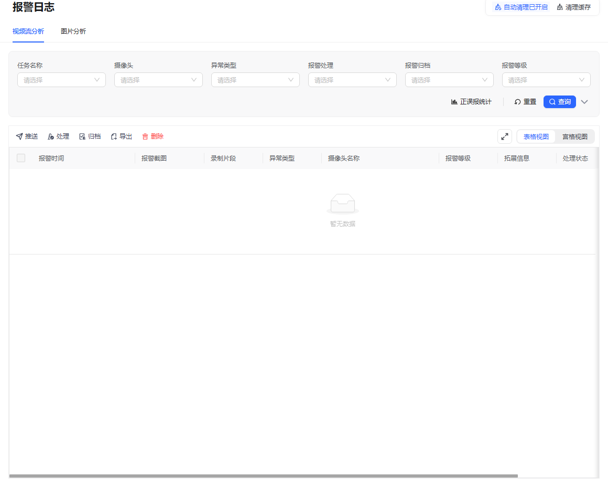 | 报警日志 业务区域默认态 | 业务区默认态 状态截图 | 默认态用于观察页面主对象、筛选区、表格/卡片区和主操作分布；本图已避开顶部公共工具区，适合分析模块自身差异。 |
 | 报警日志 Tab_视频流分析 | Tab/分段切换 已命中 | 切换 视频流分析 后观察内容是否随 tab 独立变化。产品上 tab 应表达清晰的信息分组，并保留当前上下文，避免用户在配置任务时迷失。 |
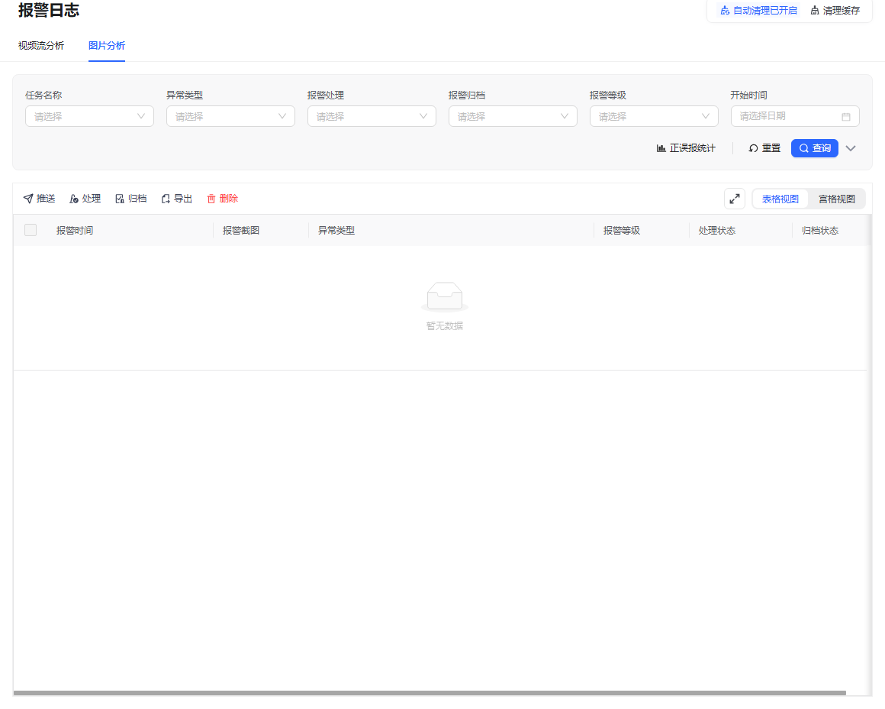 | 报警日志 Tab_图片分析 | Tab/分段切换 已命中 | 切换 图片分析 后观察内容是否随 tab 独立变化。产品上 tab 应表达清晰的信息分组，并保留当前上下文，避免用户在配置任务时迷失。 |
 | 报警日志 Tab_表格视图 | Tab/分段切换 已命中 | 切换 表格视图 后观察内容是否随 tab 独立变化。产品上 tab 应表达清晰的信息分组，并保留当前上下文，避免用户在配置任务时迷失。 |
| 报警日志 Tab_宫格视图 | Tab/分段切换 已命中 | 切换 宫格视图 后观察内容是否随 tab 独立变化。产品上 tab 应表达清晰的信息分组，并保留当前上下文，避免用户在配置任务时迷失。 | |
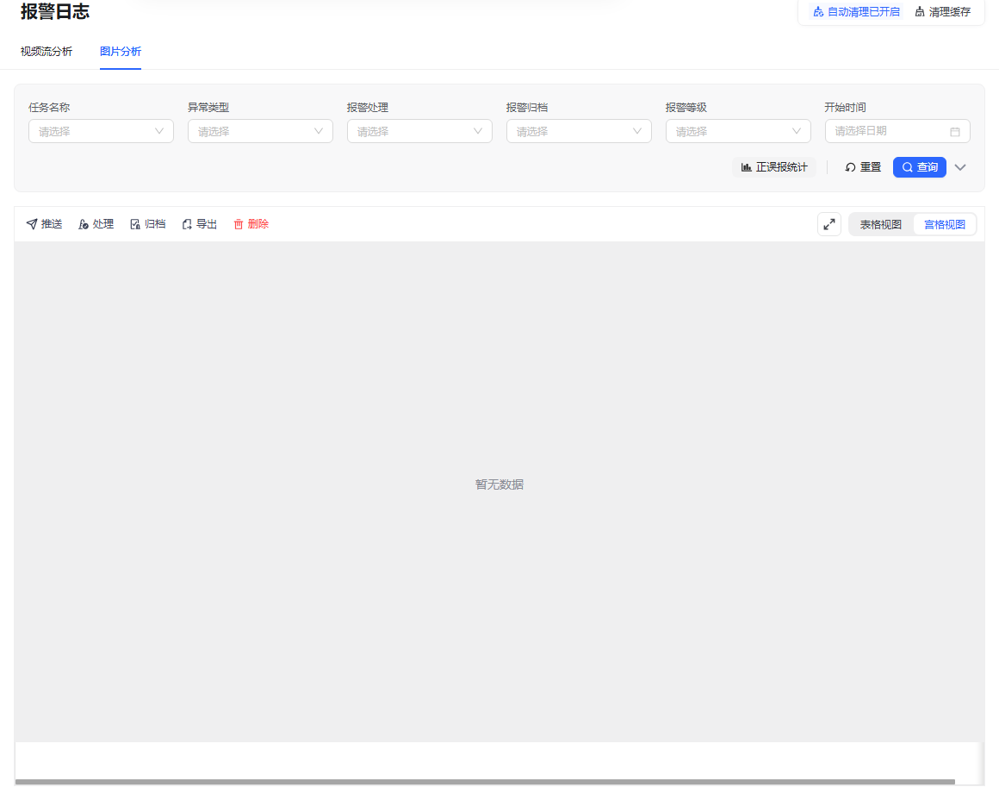 | 报警日志 操作_正误报统计 | 业务操作 已命中 | 正误报统计 是该页面的业务动作入口。若打开弹窗/抽屉，应让用户在不离开当前列表的情况下完成配置；若只是状态按钮，应有明确反馈。 |
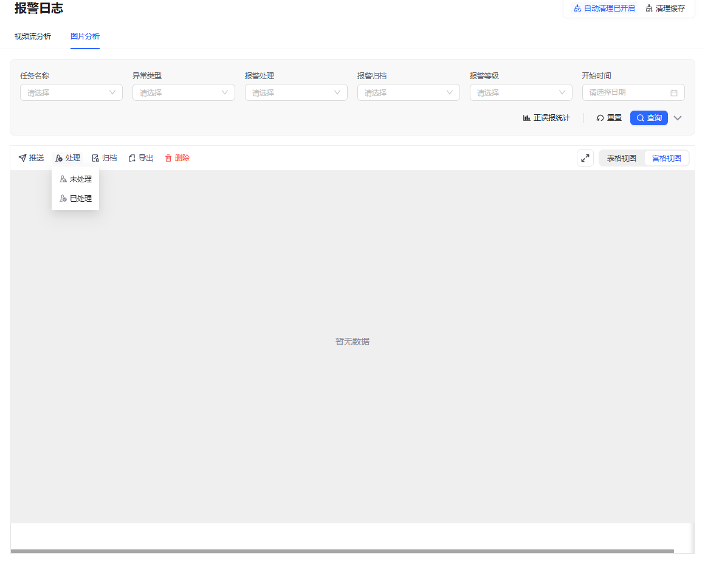 | 报警日志 操作_处理 | 业务操作 已命中 | 处理 是该页面的业务动作入口。若打开弹窗/抽屉，应让用户在不离开当前列表的情况下完成配置；若只是状态按钮，应有明确反馈。 |
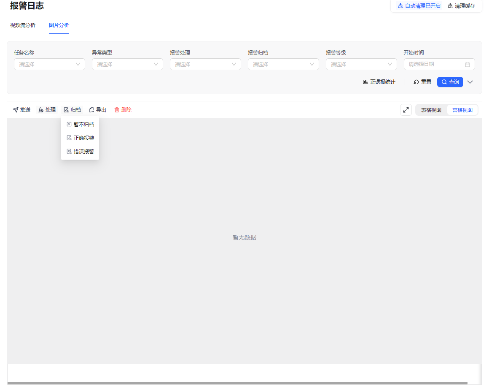 | 报警日志 操作_归档 | 安全定位 已命中 未执行最终提交 | 归档 可能产生保存、删除、安装、归档、主题切换或配置变更，本次只定位/悬停截图。产品设计上应提供权限控制、二次确认、影响范围说明和操作审计。 |
人员识别日志 聚焦截图与设计说明
- 业务定位：人员识别日志围绕身份识别结果查询，核心是人员类别、日期和图片证据的筛选。
- 产品设计思考：白名单/黑名单在当前采集态未稳定命中，页面更像通过筛选项实现人员类别过滤；建议显式化 tab 状态并提供人员库回跳。
| 截图 | 交互点 | 类型/命中状态 | 业务设计说明 |
|---|---|---|---|
 | 人员识别日志 业务区域默认态 | 业务区默认态 状态截图 | 默认态用于观察页面主对象、筛选区、表格/卡片区和主操作分布；本图已避开顶部公共工具区，适合分析模块自身差异。 |
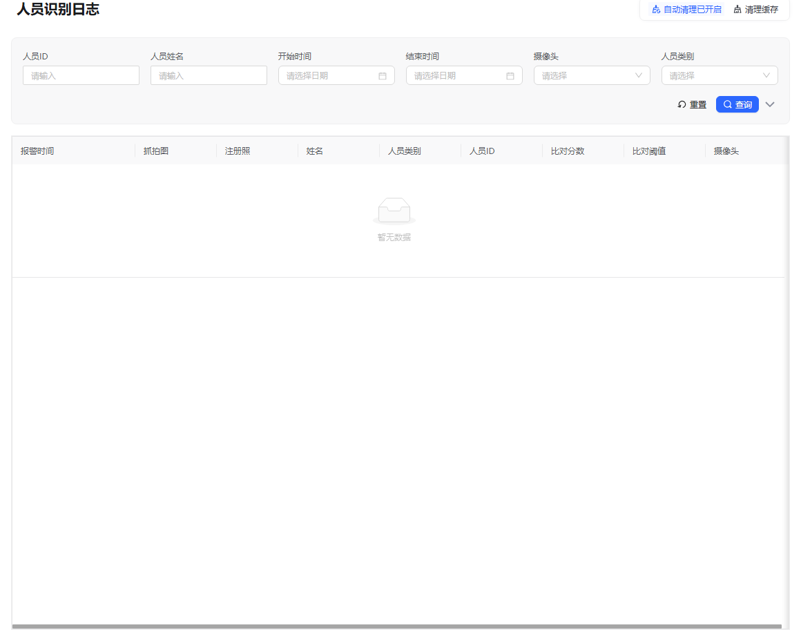 | 人员识别日志 Tab_白名单 | Tab/分段切换 未稳定命中 | 切换 白名单 后观察内容是否随 tab 独立变化。产品上 tab 应表达清晰的信息分组，并保留当前上下文，避免用户在配置任务时迷失。 |
 | 人员识别日志 Tab_黑名单 | Tab/分段切换 未稳定命中 | 切换 黑名单 后观察内容是否随 tab 独立变化。产品上 tab 应表达清晰的信息分组，并保留当前上下文，避免用户在配置任务时迷失。 |
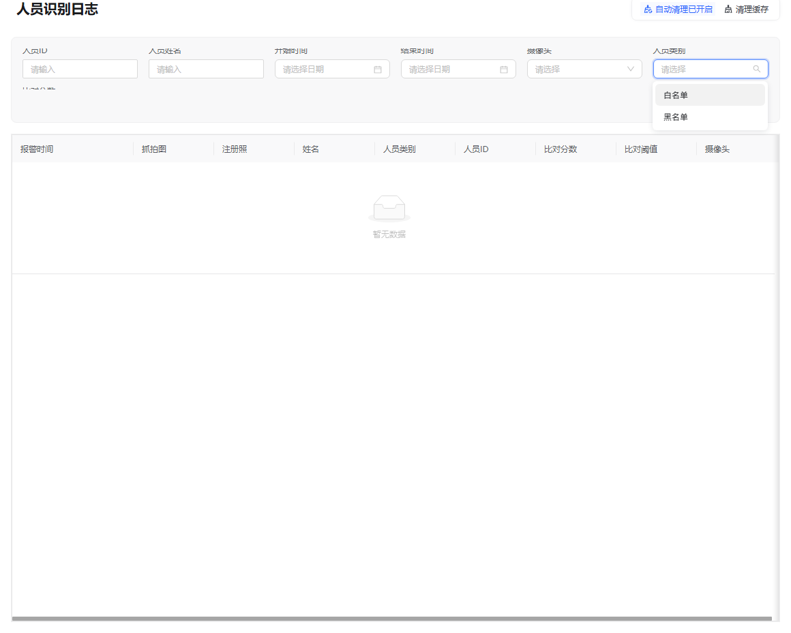 | 人员识别日志 字段_请选择 | 字段/选择器 已命中 | 请选择 代表筛选或选择器入口。筛选项应支持默认值、清空、组合查询和空状态解释，帮助用户定位日志或配置对象。 |
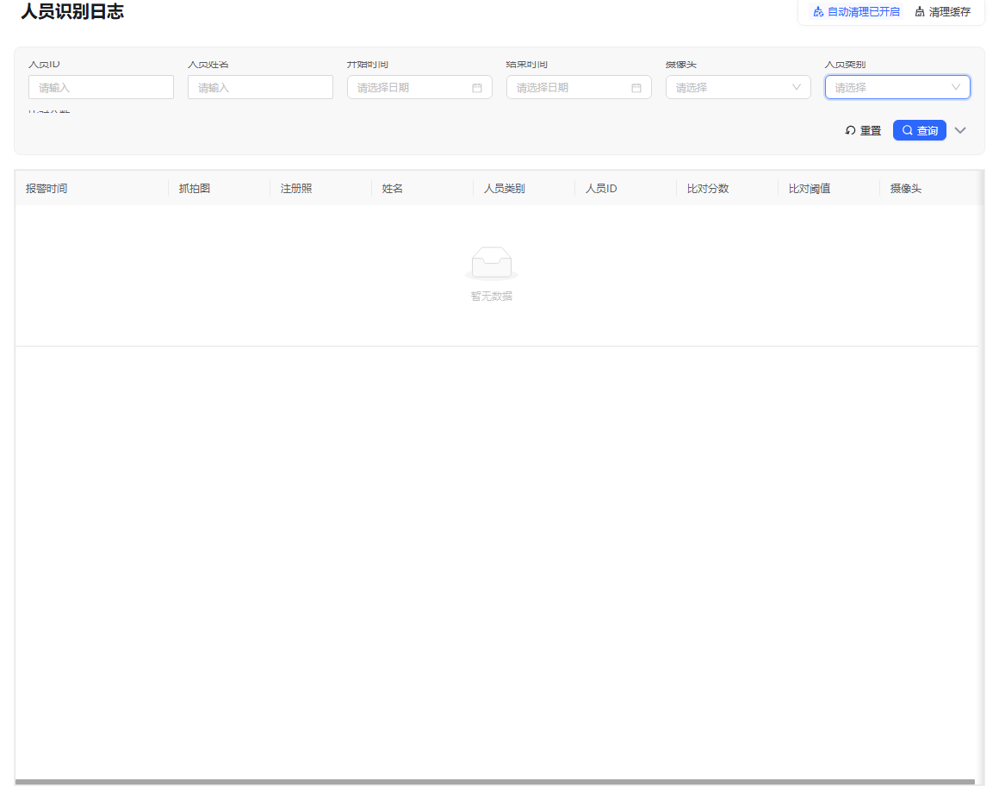 | 人员识别日志 字段_请选择日期 | 字段/选择器 未稳定命中 | 请选择日期 代表筛选或选择器入口。筛选项应支持默认值、清空、组合查询和空状态解释，帮助用户定位日志或配置对象。 |
报警日志
- 定位：AI 报警事件的主审计与处置工作台，承接查询、处理、归档、推送、导出和正误报统计。
- 核心对象：报警事件、截图、录制片段、异常类型、摄像头、报警等级、处理状态、归档状态。
- 页面 URL：http://192.168.11.88:8081/app/main-app/data/inference-output/algo/#/alarm-center/output-result/algorithm-log
- 主要控件：搜索菜单、请选择、请选择日期、请输入、正误报统计、重置、查询、推送、处理、归档、导出、删除
- 表格字段：报警时间、报警截图、录制片段、异常类型、摄像头名称、报警等级、拓展信息、处理状态、归档状态

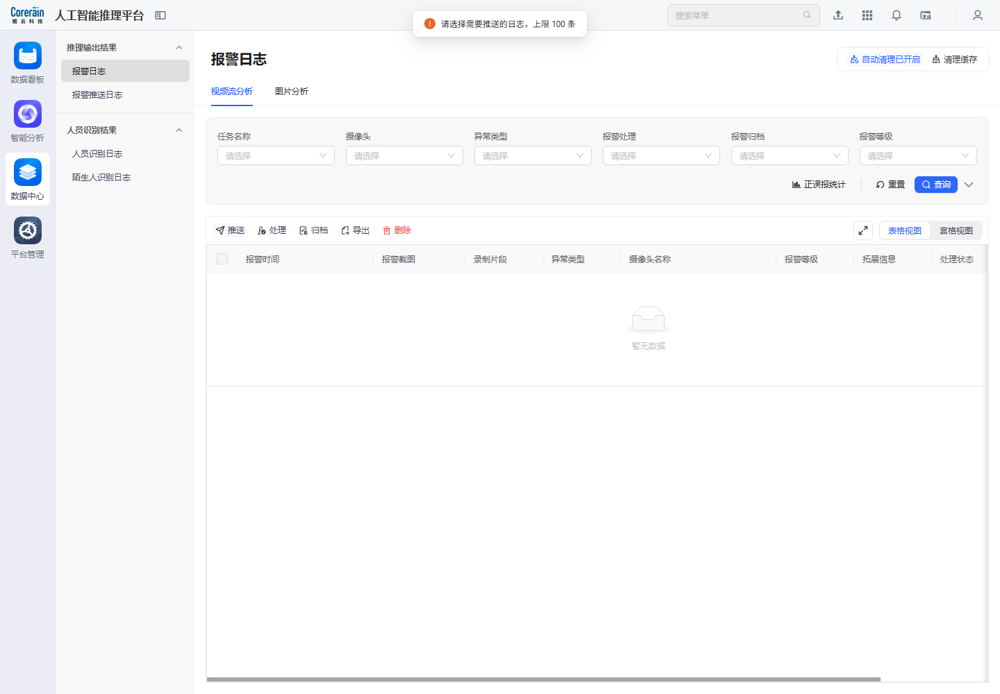
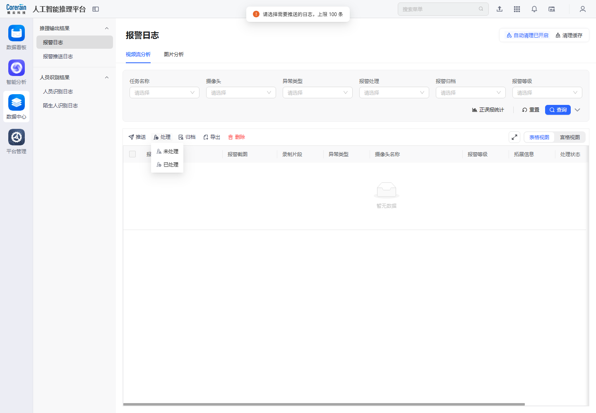
产品设计解读
- 筛选维度覆盖任务、摄像头、异常类型、时间和状态；批量操作体现运营闭环。
- 页面内容摘要：人工智能推理平台 搜索菜单 数据看板 智能分析 数据中心 平台管理 推理输出结果 报警日志 报警推送日志 人员识别结果 人员识别日志 陌生人识别日志 报警日志 自动清理已开启 清理缓存 视频流分析 图片分析 任务名称 请选择 摄像头 异常类型 请选择 报警处理 请选择 报警归档 请选择 报警等级 请选择 开始时间 结束时间 拓展信息 正误报统计 重置 查询 推送 处理 归档 导出 删除 表格视图 宫格视图 报警时间 报警截图 录制片段 异常类型 摄像头名称 报警等级 拓展信息 处理状态 归档状态 暂无数据
- 建议补充详情页、误报原因、处理备注、操作人、置信度、框选区域和关联任务配置入口。
报警日志按钮、弹窗与状态截图明细
| 截图 | 子模块/动作 | 类型与页面反馈 | 产品设计说明 |
|---|---|---|---|
| 报警日志 页面全貌 | overview 进入子模块后的页面全貌，用于识别信息架构、主操作区、筛选区和表格/卡片区。 | 页面全貌用于判断信息架构：左侧导航负责定位，主区承载筛选、操作、表格或卡片，适合作为子模块设计基线。 |
| 报警日志 滚动位置_0% | scroll 记录页面不同滚动位置，补足表格、卡片和底部状态。 | 滚动截图用于确认页面内容密度、底部表格/分页/卡片布局，避免只看首屏导致遗漏。 | |
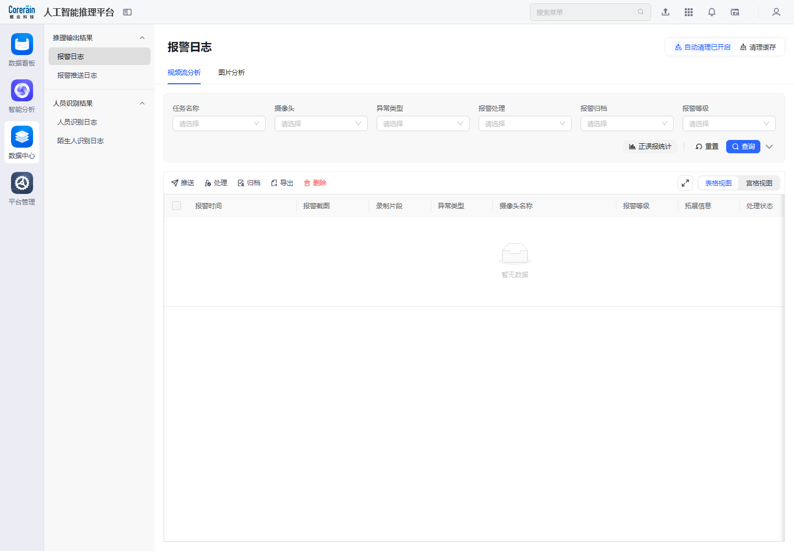 | 报警日志 01_正误报统计_悬停 | hover 悬停查看 正误报统计 的 hover/提示状态 | 悬停 正误报统计，观察按钮可点击性、危险操作样式、行操作显隐和 hover 反馈；这是判断操作优先级的重要细节。 |
| 报警日志 01_正误报统计_点击后 | click 点击后出现弹窗/下拉/提示：.custom-light-message | 点击 正误报统计 后出现消息反馈。反馈内容：请先选择统计范围（任务名称、摄像头、异常类型、报警等级、时间范围），才能进行日志的正误报统计。该设计把空选择、无效操作、成功结果即时告知用户，是批量操作和空数据场景的必要兜底。 | |
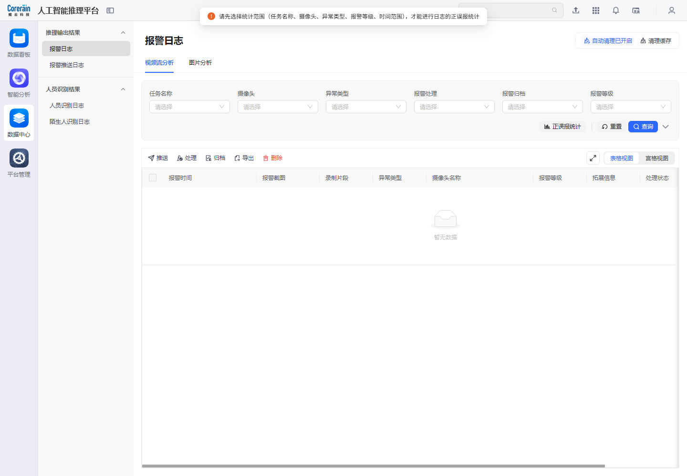 | 报警日志 02_重置_悬停 | hover 悬停查看 重置 的 hover/提示状态 | 悬停 重置，观察按钮可点击性、危险操作样式、行操作显隐和 hover 反馈；这是判断操作优先级的重要细节。 |
| 报警日志 02_重置_点击后 | click 点击后出现弹窗/下拉/提示：.custom-light-message | 点击 重置 后出现消息反馈。反馈内容：请先选择统计范围（任务名称、摄像头、异常类型、报警等级、时间范围），才能进行日志的正误报统计。该设计把空选择、无效操作、成功结果即时告知用户，是批量操作和空数据场景的必要兜底。 | |
| 报警日志 03_查询_悬停 | hover 悬停查看 查询 的 hover/提示状态 | 悬停 查询，观察按钮可点击性、危险操作样式、行操作显隐和 hover 反馈；这是判断操作优先级的重要细节。 | |
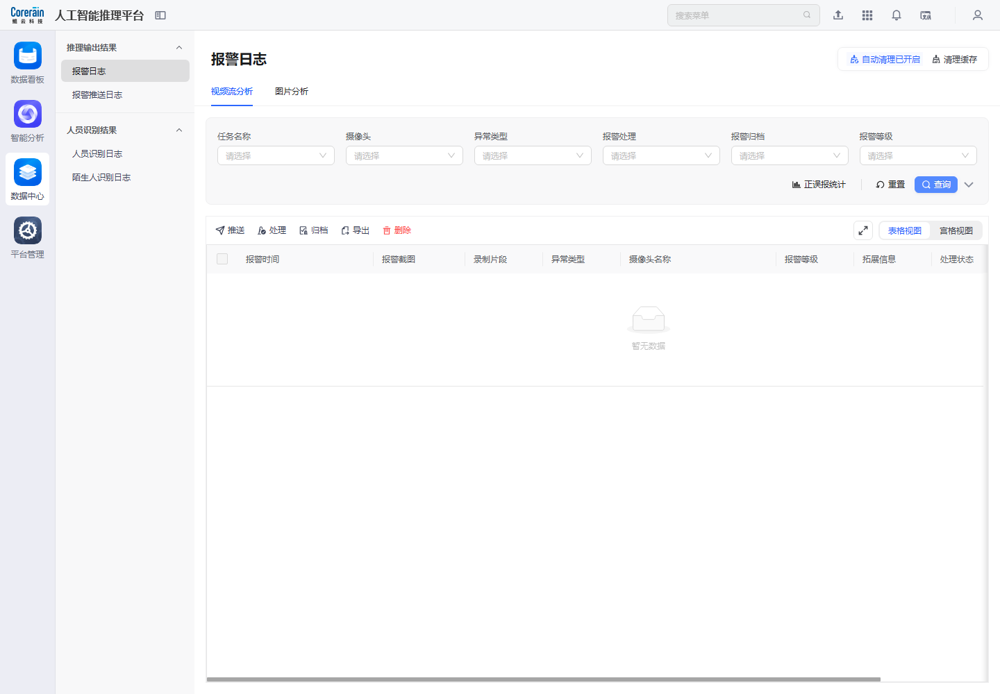 | 报警日志 03_查询_点击后 | click 点击后记录页面反馈或空数据提示 | 点击 查询 属于检索/刷新类动作，用于让用户明确控制筛选条件生效和数据更新。 |
| 报警日志 04_推送_悬停 | hover 悬停查看 推送 的 hover/提示状态 | 悬停 推送，观察按钮可点击性、危险操作样式、行操作显隐和 hover 反馈；这是判断操作优先级的重要细节。 | |
| 报警日志 04_推送_点击后 | click 点击后出现弹窗/下拉/提示：.custom-light-message | 点击 推送 后出现消息反馈。反馈内容：请选择需要推送的日志，上限 100 条。该设计把空选择、无效操作、成功结果即时告知用户，是批量操作和空数据场景的必要兜底。 | |
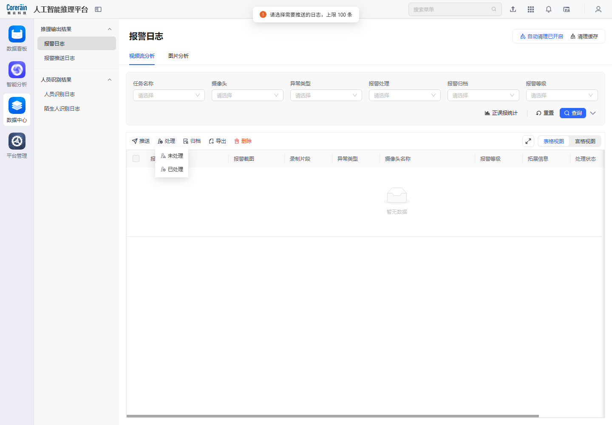 | 报警日志 05_处理_悬停 | hover 悬停查看 处理 的 hover/提示状态 | 悬停 处理，观察按钮可点击性、危险操作样式、行操作显隐和 hover 反馈；这是判断操作优先级的重要细节。 |
| 报警日志 05_处理_点击后 | click 点击后出现弹窗/下拉/提示：.custom-light-dropdown、.custom-light-message | 点击 处理 后打开菜单。菜单内容：未处理 已处理；请选择需要推送的日志，上限 100 条。适合更多操作、账号、语言、应用中心、通知等轻量分发场景。 | |
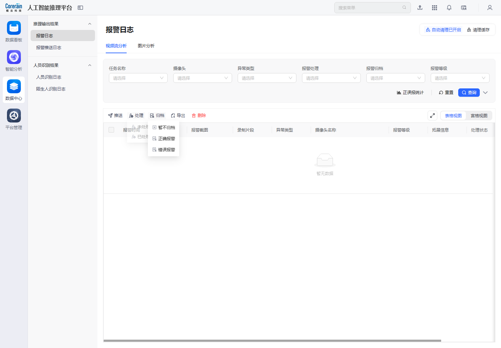 | 报警日志 06_归档_悬停 | hover 悬停查看 归档 的 hover/提示状态 | 悬停 归档，观察按钮可点击性、危险操作样式、行操作显隐和 hover 反馈；这是判断操作优先级的重要细节。 |
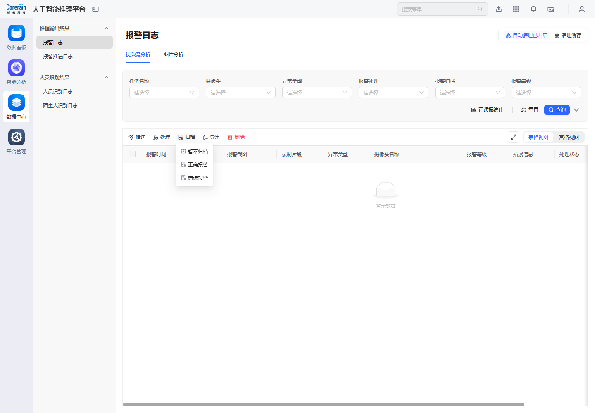 | 报警日志 06_归档_点击后 | click 点击后出现弹窗/下拉/提示：.custom-light-dropdown | 点击 归档 后打开菜单。菜单内容：暂不归档 正确报警 错误报警。适合更多操作、账号、语言、应用中心、通知等轻量分发场景。 |
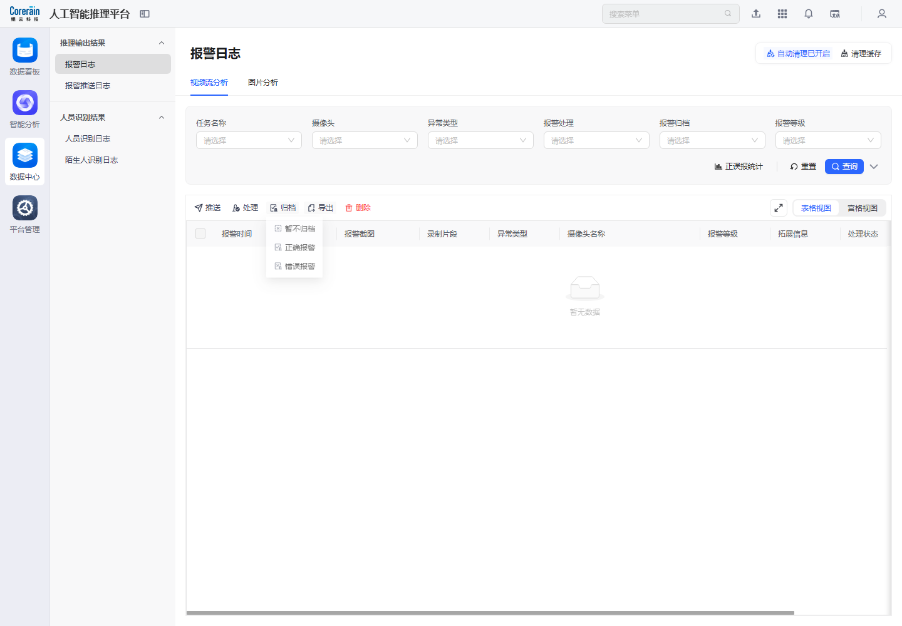 | 报警日志 07_导出_悬停 | hover 悬停查看 导出 的 hover/提示状态 | 悬停 导出，观察按钮可点击性、危险操作样式、行操作显隐和 hover 反馈；这是判断操作优先级的重要细节。 |
| 报警日志 07_导出_安全跳过点击 | safety-skip 该控件可能触发安装、导出、保存等最终动作，本轮只记录悬停状态，避免修改系统数据。 | 该操作可能产生安装、导出、保存、删除、启停或配置变更等副作用，本次只保留悬停/按钮状态截图；产品上应通过权限、二次确认和审计保护。 | |
| 报警日志 08_删除_悬停 | hover 悬停查看 删除 的 hover/提示状态 | 悬停 删除，观察按钮可点击性、危险操作样式、行操作显隐和 hover 反馈；这是判断操作优先级的重要细节。 | |
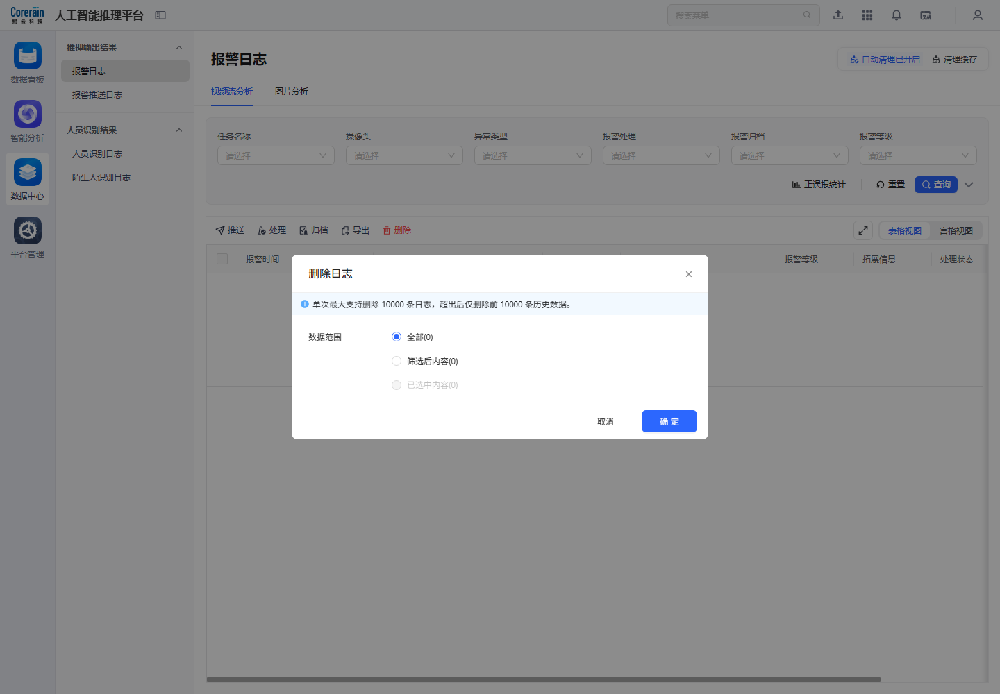 | 报警日志 08_删除_点击后 | click 点击后出现弹窗/下拉/提示：.custom-light-modal、[role="dialog"] | 点击 删除 后进入弹窗/抽屉式流程。弹窗内容：删除日志 单次最大支持删除 10000 条日志，超出后仅删除前 10000 条历史数据。 数据范围 全部(0) 筛选后内容(0) 已选中内容(0) 取消 确 定。设计上把复杂创建、导入、配置或密码类操作隔离在临时层，既保留当前列表上下文，也降低页面跳转成本。 |
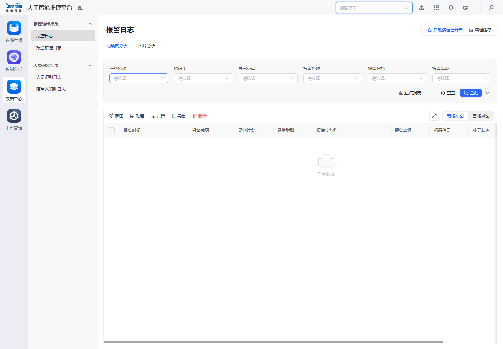 | 报警日志 10_请选择_悬停 | hover 悬停查看 请选择 的 hover/提示状态 | 悬停 请选择，观察按钮可点击性、危险操作样式、行操作显隐和 hover 反馈；这是判断操作优先级的重要细节。 |
| 报警日志 10_请选择_点击后 | focus-or-open 点击后出现弹窗/下拉/提示：.custom-light-select-dropdown | 点击 请选择 后打开下拉选择。选项内容：d8468ec0a40443268756f8523ec1effb 产品测试任务。适合枚举型筛选、菜单搜索和业务分类选择，建议支持搜索、高亮和最近使用。 | |
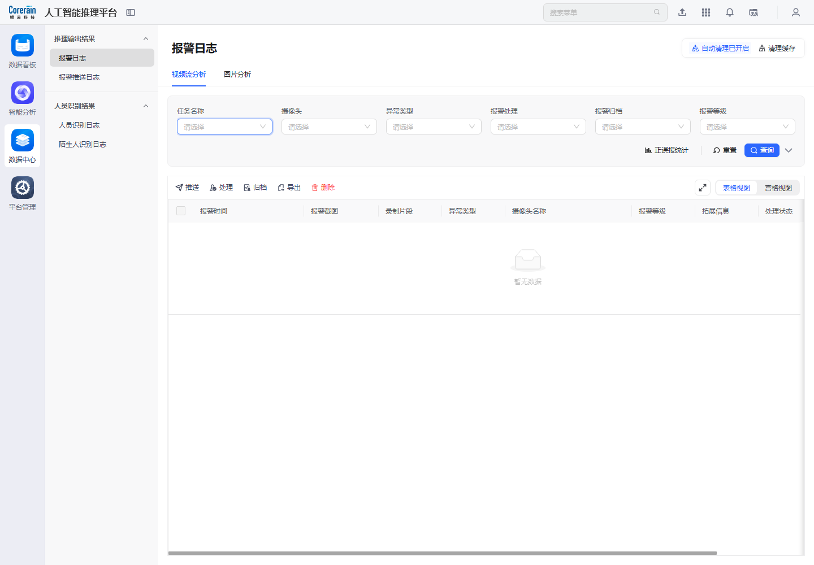 | 报警日志 11_请选择_悬停 | hover 悬停查看 请选择 的 hover/提示状态 | 悬停 请选择，观察按钮可点击性、危险操作样式、行操作显隐和 hover 反馈；这是判断操作优先级的重要细节。 |
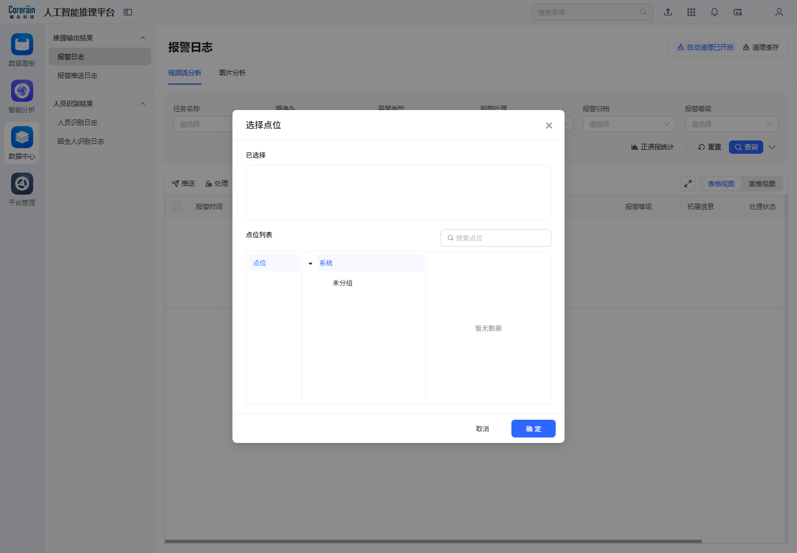 | 报警日志 11_请选择_点击后 | focus-or-open 点击后出现弹窗/下拉/提示：.custom-light-modal、[role="dialog"] | 点击 请选择 后进入弹窗/抽屉式流程。弹窗内容：选择点位 已选择 点位列表 点位 系统 未分组 暂无数据 取消 确 定。设计上把复杂创建、导入、配置或密码类操作隔离在临时层，既保留当前列表上下文，也降低页面跳转成本。 |
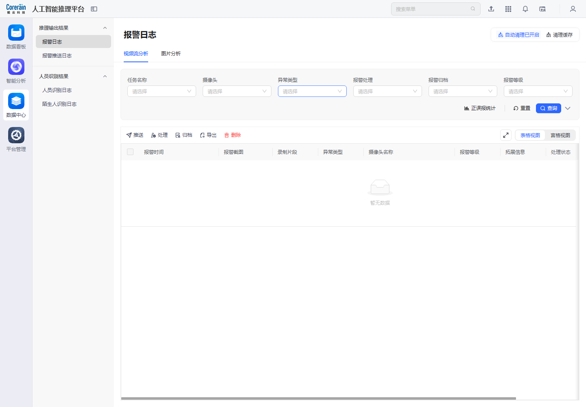 | 报警日志 12_请选择_悬停 | hover 悬停查看 请选择 的 hover/提示状态 | 悬停 请选择，观察按钮可点击性、危险操作样式、行操作显隐和 hover 反馈；这是判断操作优先级的重要细节。 |
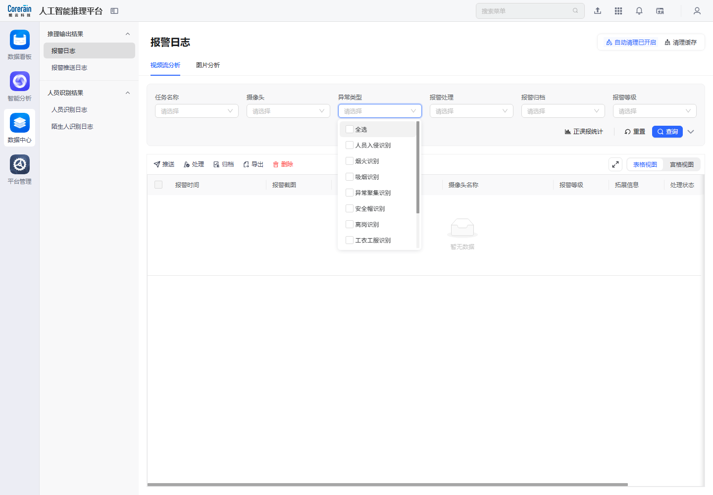 | 报警日志 12_请选择_点击后 | focus-or-open 点击后出现弹窗/下拉/提示：.custom-light-select-dropdown | 点击 请选择 后打开下拉选择。选项内容：select-all 4 全选 人员入侵识别 烟火识别 吸烟识别 异常聚集识别 安全帽识别 离岗识别 工衣工服识别 睡岗识别 翻越围栏识别 打电话识别。适合枚举型筛选、菜单搜索和业务分类选择，建议支持搜索、高亮和最近使用。 |
报警推送日志
- 定位：外部推送链路的审计页，解释“报警是否送出去、失败是否重试”。
- 核心对象：推送时间、报警截图、异常类型、推送状态、数据 ID、推送地址。
- 页面 URL：http://192.168.11.88:8081/app/main-app/data/inference-output/callback/#/open-ability/alarm-push/push-log
- 主要控件：搜索菜单、数据ID/任务ID/摄像头ID/流地址、请选择、请选择日期时间、重置、查询、失败重推
- 表格字段：推送时间、报警截图、录制片段、异常类型、推送状态、数据 ID、推送地址
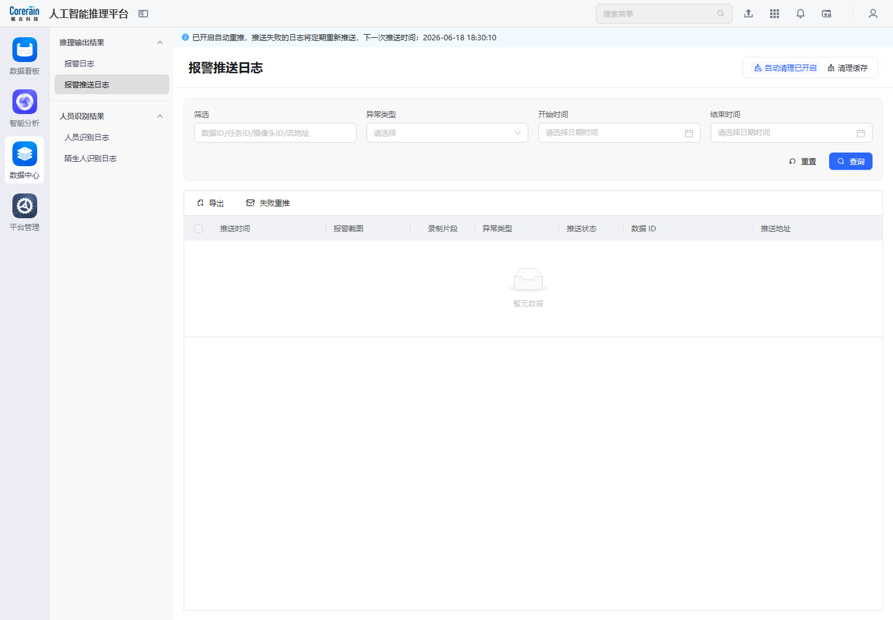
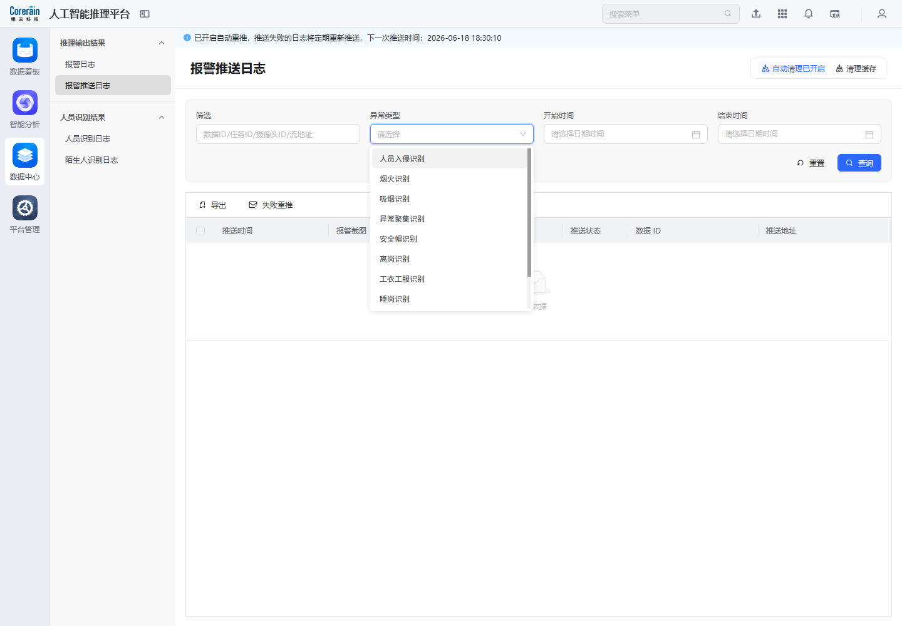
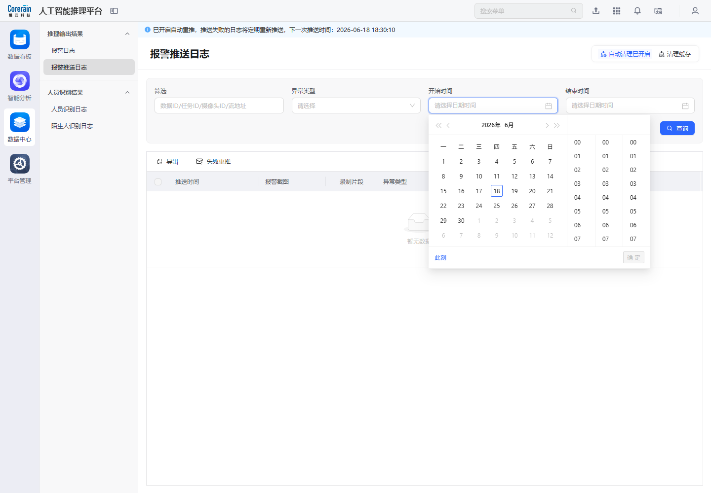

产品设计解读
- 页面显示自动重推和下一次推送时间，给运维明确预期；失败重推作为兜底动作。
- 页面内容摘要：人工智能推理平台 搜索菜单 数据看板 智能分析 数据中心 平台管理 推理输出结果 报警日志 报警推送日志 人员识别结果 人员识别日志 陌生人识别日志 已开启自动重推，推送失败的日志将定期重新推送，下一次推送时间：2026-06-18 18:30:10 报警推送日志 自动清理已开启 清理缓存 筛选 异常类型 请选择 开始时间 结束时间 重置 查询 导出 失败重推 推送时间 报警截图 录制片段 异常类型 推送状态 数据 ID 推送地址 暂无数据
- 建议增加失败原因分组、HTTP 状态码、响应体摘要、重试次数和目标系统可用性。
报警推送日志按钮、弹窗与状态截图明细
| 截图 | 子模块/动作 | 类型与页面反馈 | 产品设计说明 |
|---|---|---|---|
| 报警推送日志 页面全貌 | overview 进入子模块后的页面全貌，用于识别信息架构、主操作区、筛选区和表格/卡片区。 | 页面全貌用于判断信息架构：左侧导航负责定位，主区承载筛选、操作、表格或卡片，适合作为子模块设计基线。 | |
 | 报警推送日志 滚动位置_0% | scroll 记录页面不同滚动位置，补足表格、卡片和底部状态。 | 滚动截图用于确认页面内容密度、底部表格/分页/卡片布局，避免只看首屏导致遗漏。 |
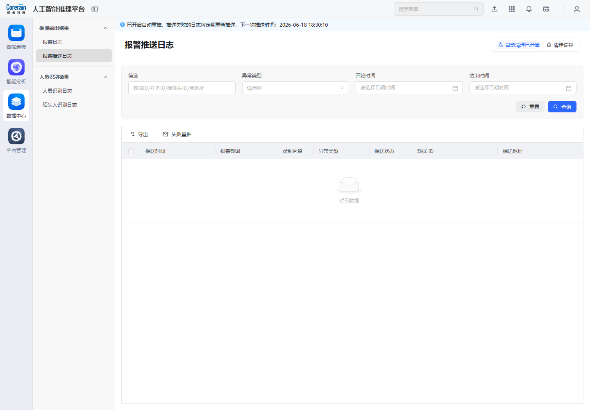 | 报警推送日志 01_重置_悬停 | hover 悬停查看 重置 的 hover/提示状态 | 悬停 重置，观察按钮可点击性、危险操作样式、行操作显隐和 hover 反馈；这是判断操作优先级的重要细节。 |
| 报警推送日志 01_重置_点击后 | click 点击后记录页面反馈或空数据提示 | 点击 重置 属于检索/刷新类动作，用于让用户明确控制筛选条件生效和数据更新。 | |
| 报警推送日志 02_查询_悬停 | hover 悬停查看 查询 的 hover/提示状态 | 悬停 查询，观察按钮可点击性、危险操作样式、行操作显隐和 hover 反馈；这是判断操作优先级的重要细节。 | |
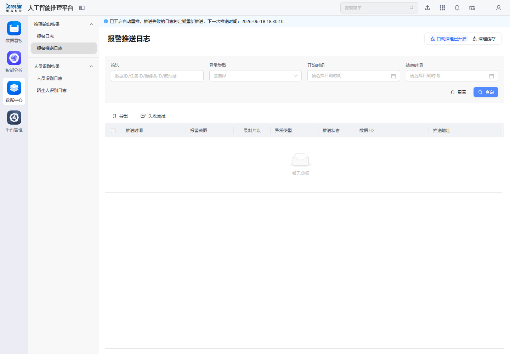 | 报警推送日志 02_查询_点击后 | click 点击后记录页面反馈或空数据提示 | 点击 查询 属于检索/刷新类动作，用于让用户明确控制筛选条件生效和数据更新。 |
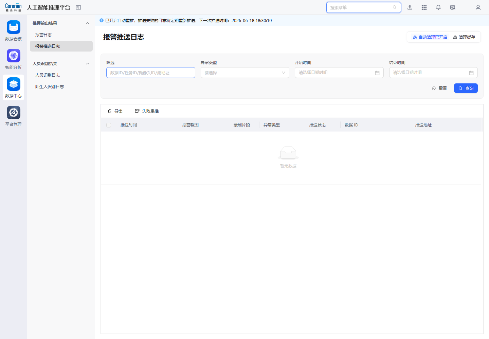 | 报警推送日志 04_数据ID/任务ID/摄像头ID/流地址_悬停 | hover 悬停查看 数据ID/任务ID/摄像头ID/流地址 的 hover/提示状态 | 悬停 数据ID/任务ID/摄像头ID/流地址，观察按钮可点击性、危险操作样式、行操作显隐和 hover 反馈；这是判断操作优先级的重要细节。 |
| 报警推送日志 04_数据ID/任务ID/摄像头ID/流地址_点击后 | focus-or-open 点击后记录页面反馈或空数据提示 | 点击后记录页面反馈或空数据提示 | |
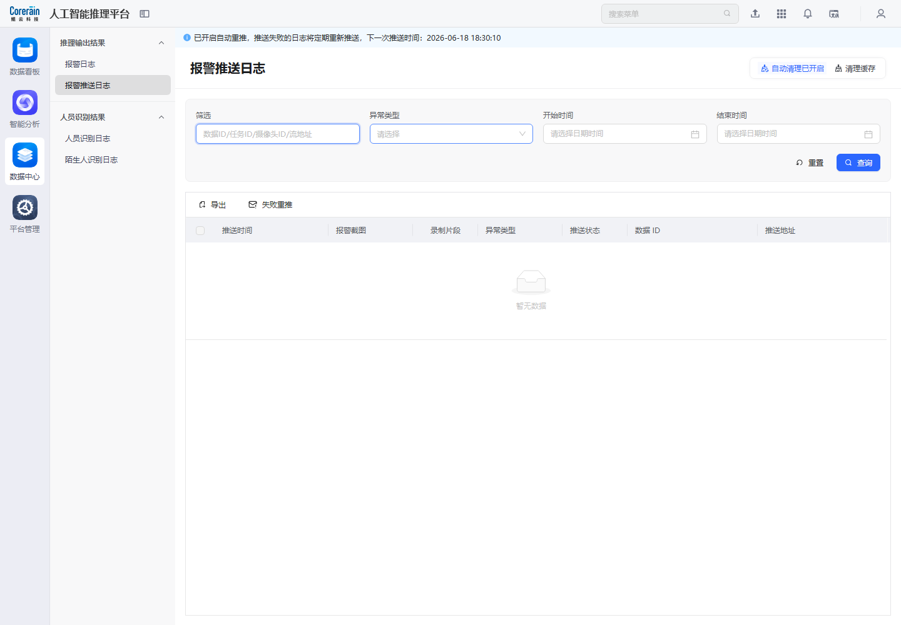 | 报警推送日志 05_请选择_悬停 | hover 悬停查看 请选择 的 hover/提示状态 | 悬停 请选择，观察按钮可点击性、危险操作样式、行操作显隐和 hover 反馈；这是判断操作优先级的重要细节。 |
| 报警推送日志 05_请选择_点击后 | focus-or-open 点击后出现弹窗/下拉/提示：.custom-light-select-dropdown | 点击 请选择 后打开下拉选择。选项内容：4 7 人员入侵识别 烟火识别 吸烟识别 异常聚集识别 安全帽识别 离岗识别 工衣工服识别 睡岗识别 翻越围栏识别 打电话识别。适合枚举型筛选、菜单搜索和业务分类选择，建议支持搜索、高亮和最近使用。 | |
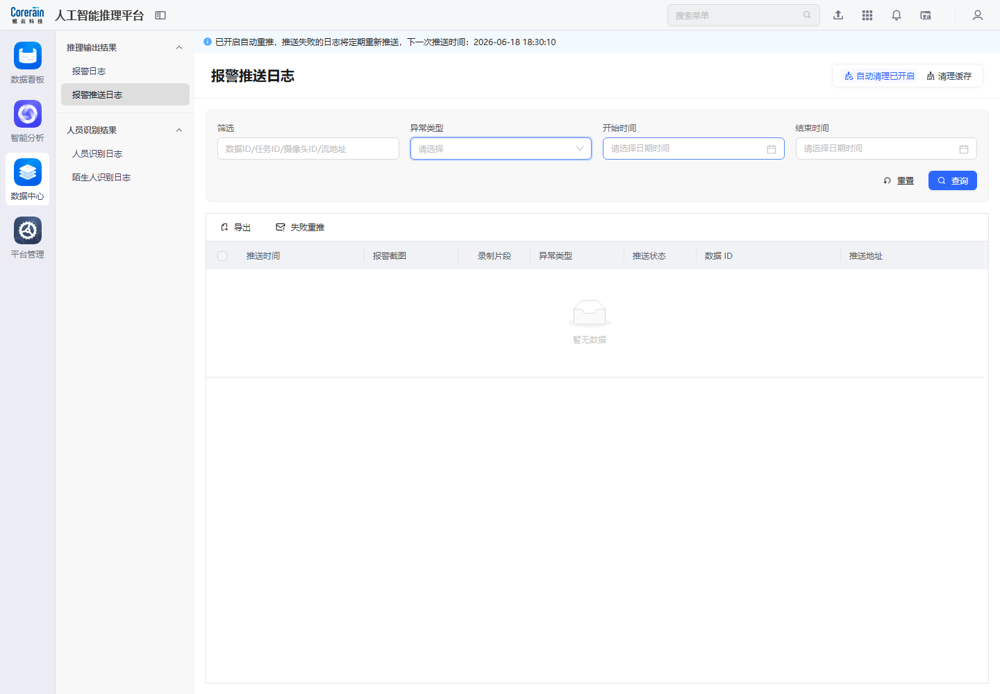 | 报警推送日志 06_请选择日期时间_悬停 | hover 悬停查看 请选择日期时间 的 hover/提示状态 | 悬停 请选择日期时间，观察按钮可点击性、危险操作样式、行操作显隐和 hover 反馈；这是判断操作优先级的重要细节。 |
| 报警推送日志 06_请选择日期时间_点击后 | focus-or-open 点击后出现弹窗/下拉/提示：.custom-light-picker-dropdown | 点击 请选择日期时间 后打开日期/时间选择器。日期控件把审计和日志类页面的时间范围筛选标准化，是追溯类功能的核心输入。 | |
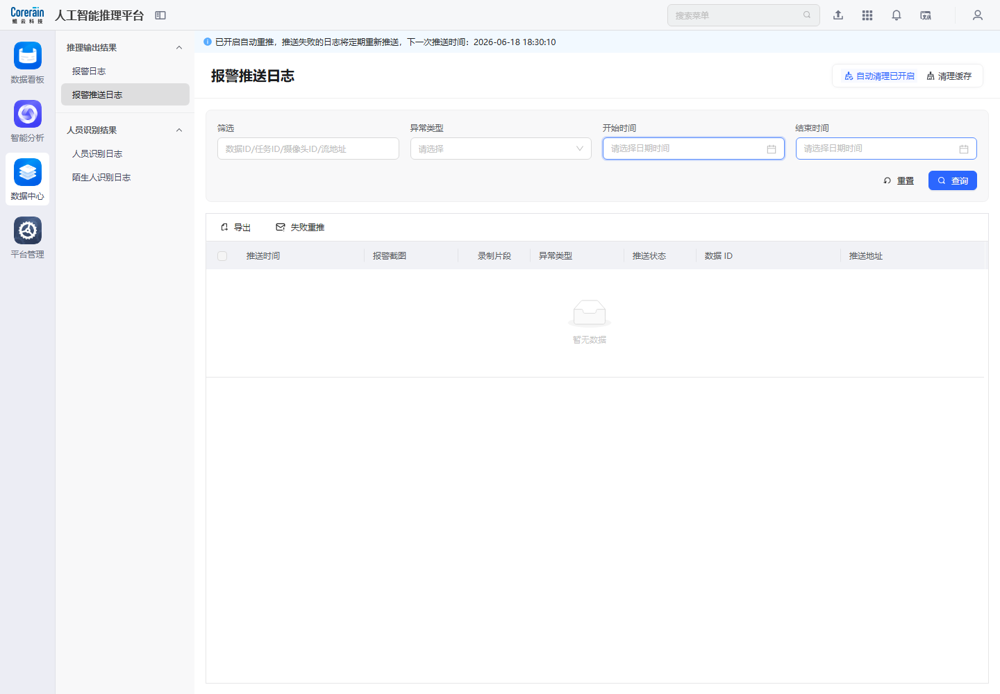 | 报警推送日志 07_请选择日期时间_悬停 | hover 悬停查看 请选择日期时间 的 hover/提示状态 | 悬停 请选择日期时间，观察按钮可点击性、危险操作样式、行操作显隐和 hover 反馈；这是判断操作优先级的重要细节。 |
| 报警推送日志 07_请选择日期时间_点击后 | focus-or-open 点击后出现弹窗/下拉/提示：.custom-light-picker-dropdown | 点击 请选择日期时间 后打开日期/时间选择器。日期控件把审计和日志类页面的时间范围筛选标准化，是追溯类功能的核心输入。 |
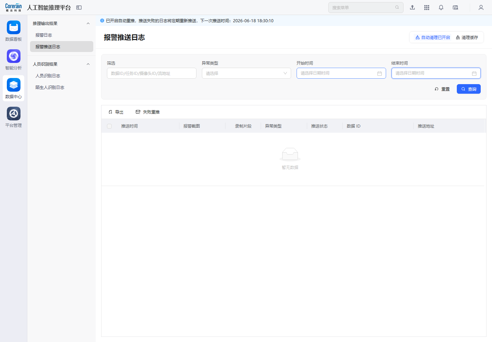 | 报警推送日志 08_请选择日期时间_悬停 | hover 悬停查看 请选择日期时间 的 hover/提示状态 | 悬停 请选择日期时间，观察按钮可点击性、危险操作样式、行操作显隐和 hover 反馈；这是判断操作优先级的重要细节。 |
| 报警推送日志 08_请选择日期时间_点击后 | focus-or-open 点击后出现弹窗/下拉/提示：.custom-light-picker-dropdown | 点击 请选择日期时间 后打开日期/时间选择器。日期控件把审计和日志类页面的时间范围筛选标准化，是追溯类功能的核心输入。 | |
| 报警推送日志 09_请选择日期时间_悬停 | hover 悬停查看 请选择日期时间 的 hover/提示状态 | 悬停 请选择日期时间，观察按钮可点击性、危险操作样式、行操作显隐和 hover 反馈；这是判断操作优先级的重要细节。 | |
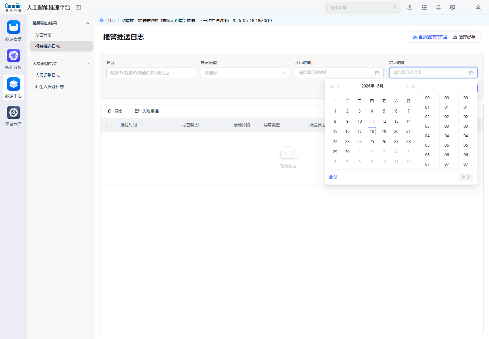 | 报警推送日志 09_请选择日期时间_点击后 | focus-or-open 点击后出现弹窗/下拉/提示：.custom-light-picker-dropdown | 点击 请选择日期时间 后打开日期/时间选择器。日期控件把审计和日志类页面的时间范围筛选标准化，是追溯类功能的核心输入。 |
人员识别日志
- 定位：人员识别结果的查询与审计页，关注身份匹配、比对分数、人员类别与摄像头来源。
- 核心对象：抓拍图、注册照、姓名、人员类别、人员 ID、比对分数、阈值、摄像头。
- 页面 URL：http://192.168.11.88:8081/app/main-app/data/personnel_identification_log/#/personnel_identification_log
- 主要控件：搜索菜单、请输入、请选择日期、请选择、Increase Value、Decrease Value、重置、查询
- 表格字段：报警时间、抓拍图、注册照、姓名、人员类别、人员ID、比对分数、比对阈值、摄像头
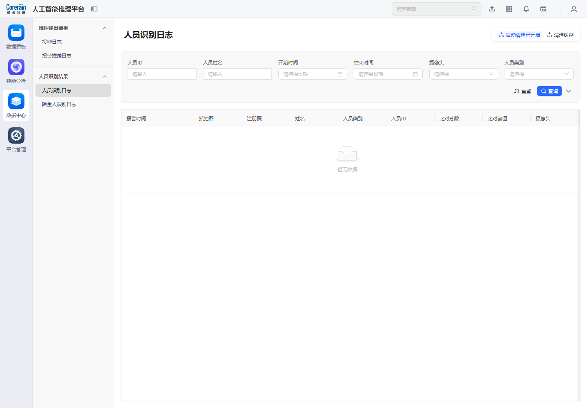
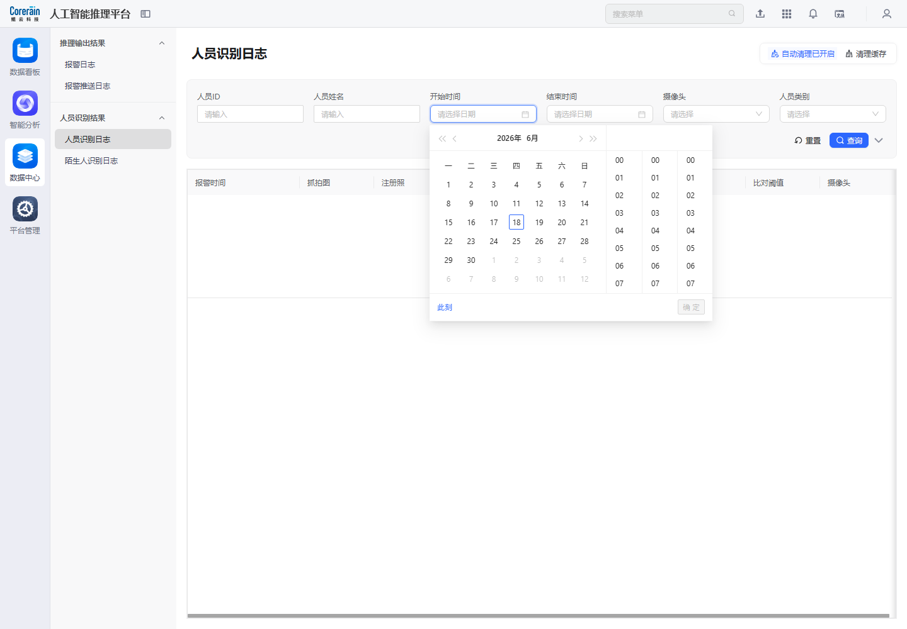
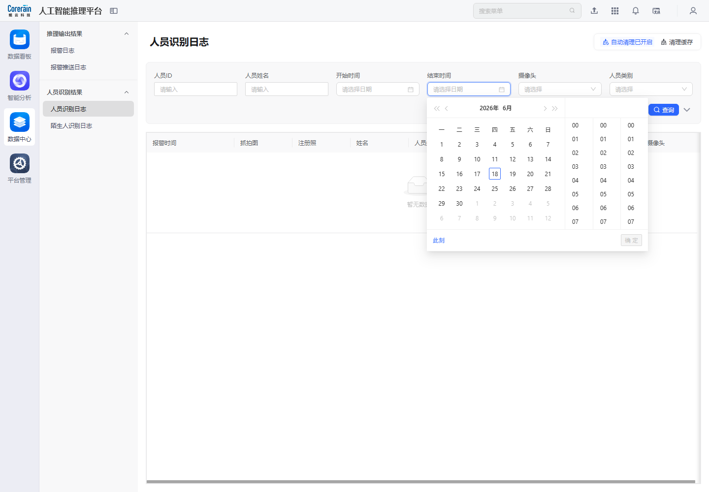
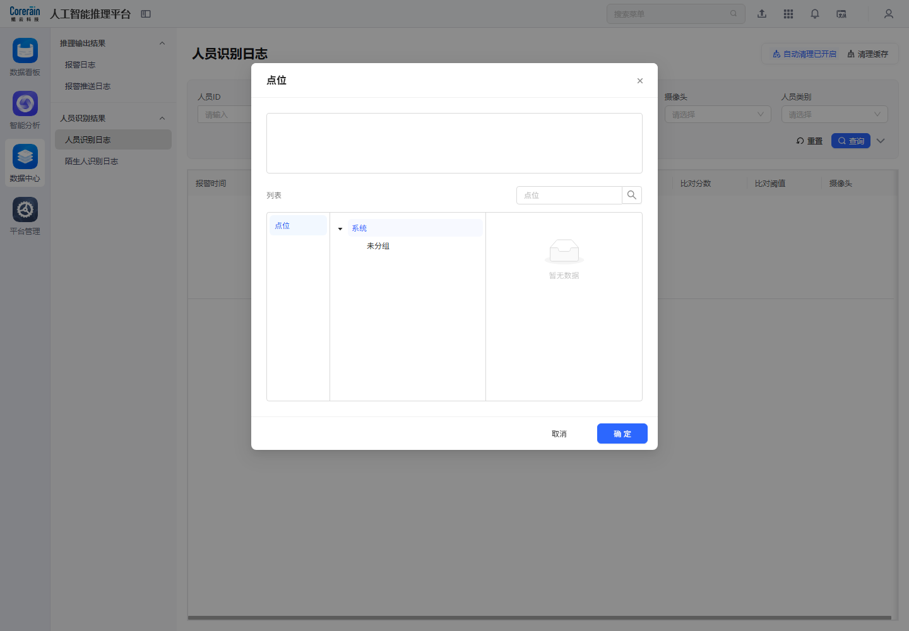
产品设计解读
- 抓拍图与注册照并列，适合快速复核识别质量；人员类别支持白名单/黑名单等业务语义。
- 页面内容摘要：人工智能推理平台 搜索菜单 数据看板 智能分析 数据中心 平台管理 推理输出结果 报警日志 报警推送日志 人员识别结果 人员识别日志 陌生人识别日志 人员识别日志 自动清理已开启 清理缓存 人员ID 人员姓名 开始时间 结束时间 摄像头 人员类别 请选择 比对分数 重置 查询 报警时间 抓拍图 注册照 姓名 人员类别 人员ID 比对分数 比对阈值 摄像头 暂无数据
- 建议增加识别详情、误识别纠正、人员库回跳、阈值策略说明和隐私留存策略。
人员识别日志按钮、弹窗与状态截图明细
| 截图 | 子模块/动作 | 类型与页面反馈 | 产品设计说明 |
|---|---|---|---|
| 人员识别日志 页面全貌 | overview 进入子模块后的页面全貌，用于识别信息架构、主操作区、筛选区和表格/卡片区。 | 页面全貌用于判断信息架构：左侧导航负责定位，主区承载筛选、操作、表格或卡片，适合作为子模块设计基线。 | |
| 人员识别日志 滚动位置_0% | scroll 记录页面不同滚动位置，补足表格、卡片和底部状态。 | 滚动截图用于确认页面内容密度、底部表格/分页/卡片布局，避免只看首屏导致遗漏。 | |
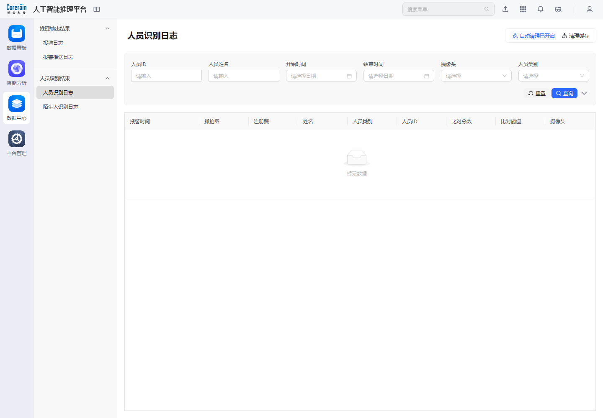 | 人员识别日志 01_重置_悬停 | hover 悬停查看 重置 的 hover/提示状态 | 悬停 重置，观察按钮可点击性、危险操作样式、行操作显隐和 hover 反馈；这是判断操作优先级的重要细节。 |
| 人员识别日志 01_重置_点击后 | click 点击后记录页面反馈或空数据提示 | 点击 重置 属于检索/刷新类动作，用于让用户明确控制筛选条件生效和数据更新。 | |
| 人员识别日志 02_查询_悬停 | hover 悬停查看 查询 的 hover/提示状态 | 悬停 查询，观察按钮可点击性、危险操作样式、行操作显隐和 hover 反馈；这是判断操作优先级的重要细节。 | |
| 人员识别日志 02_查询_点击后 | click 点击后记录页面反馈或空数据提示 | 点击 查询 属于检索/刷新类动作，用于让用户明确控制筛选条件生效和数据更新。 | |
| 人员识别日志 03_Increase Value_悬停 | hover 悬停查看 Increase Value 的 hover/提示状态 | 悬停 Increase Value，观察按钮可点击性、危险操作样式、行操作显隐和 hover 反馈；这是判断操作优先级的重要细节。 | |
 | 人员识别日志 03_Increase Value_点击后 | click 点击后记录页面反馈或空数据提示 | 点击后记录页面反馈或空数据提示 |
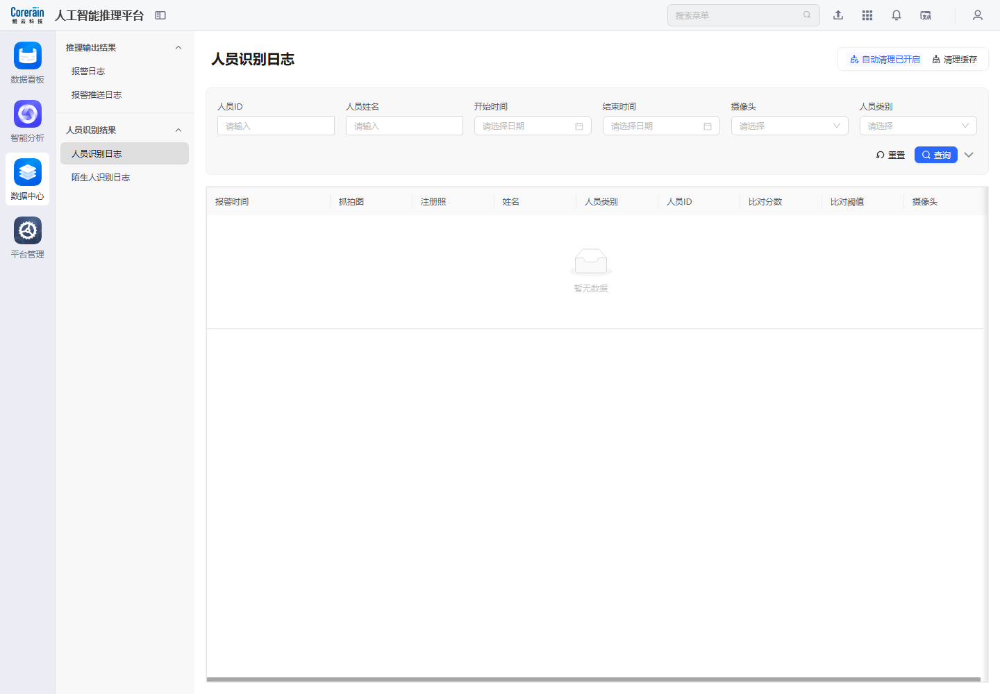 | 人员识别日志 04_Increase Value_悬停 | hover 悬停查看 Increase Value 的 hover/提示状态 | 悬停 Increase Value，观察按钮可点击性、危险操作样式、行操作显隐和 hover 反馈；这是判断操作优先级的重要细节。 |
 | 人员识别日志 04_Increase Value_点击后 | click 点击后记录页面反馈或空数据提示 | 点击后记录页面反馈或空数据提示 |
 | 人员识别日志 05_Decrease Value_悬停 | hover 悬停查看 Decrease Value 的 hover/提示状态 | 悬停 Decrease Value，观察按钮可点击性、危险操作样式、行操作显隐和 hover 反馈；这是判断操作优先级的重要细节。 |
 | 人员识别日志 05_Decrease Value_点击后 | click 点击后记录页面反馈或空数据提示 | 点击后记录页面反馈或空数据提示 |
 | 人员识别日志 06_Decrease Value_悬停 | hover 悬停查看 Decrease Value 的 hover/提示状态 | 悬停 Decrease Value，观察按钮可点击性、危险操作样式、行操作显隐和 hover 反馈；这是判断操作优先级的重要细节。 |
 | 人员识别日志 06_Decrease Value_点击后 | click 点击后记录页面反馈或空数据提示 | 点击后记录页面反馈或空数据提示 |
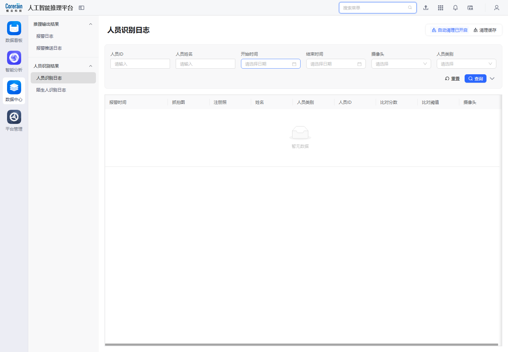 | 人员识别日志 08_请选择日期_悬停 | hover 悬停查看 请选择日期 的 hover/提示状态 | 悬停 请选择日期，观察按钮可点击性、危险操作样式、行操作显隐和 hover 反馈；这是判断操作优先级的重要细节。 |
| 人员识别日志 08_请选择日期_点击后 | focus-or-open 点击后出现弹窗/下拉/提示：.custom-light-picker-dropdown | 点击 请选择日期 后打开日期/时间选择器。日期控件把审计和日志类页面的时间范围筛选标准化，是追溯类功能的核心输入。 | |
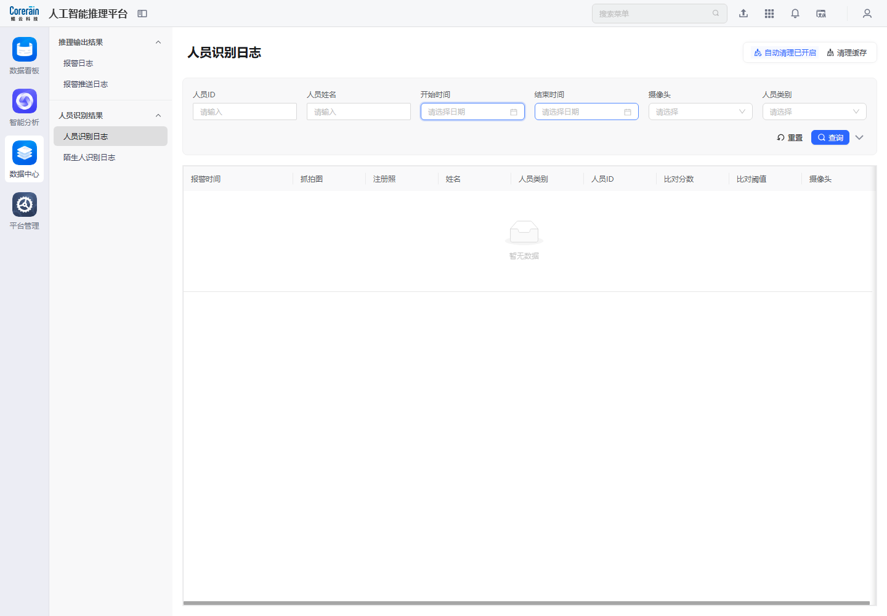 | 人员识别日志 09_请选择日期_悬停 | hover 悬停查看 请选择日期 的 hover/提示状态 | 悬停 请选择日期，观察按钮可点击性、危险操作样式、行操作显隐和 hover 反馈；这是判断操作优先级的重要细节。 |
| 人员识别日志 09_请选择日期_点击后 | focus-or-open 点击后出现弹窗/下拉/提示：.custom-light-picker-dropdown | 点击 请选择日期 后打开日期/时间选择器。日期控件把审计和日志类页面的时间范围筛选标准化，是追溯类功能的核心输入。 | |
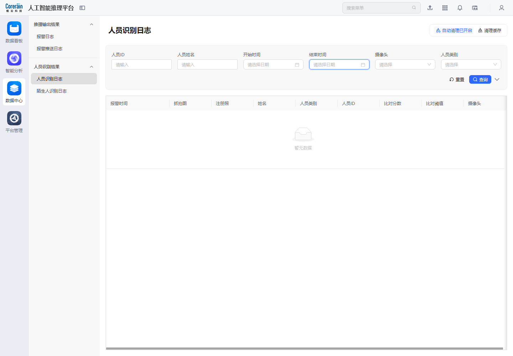 | 人员识别日志 10_请选择_悬停 | hover 悬停查看 请选择 的 hover/提示状态 | 悬停 请选择，观察按钮可点击性、危险操作样式、行操作显隐和 hover 反馈；这是判断操作优先级的重要细节。 |
| 人员识别日志 10_请选择_点击后 | focus-or-open 点击后出现弹窗/下拉/提示：.custom-light-modal、[role="dialog"] | 点击 请选择 后进入弹窗/抽屉式流程。弹窗内容：点位 列表 点位 系统 未分组 暂无数据 取消 确 定。设计上把复杂创建、导入、配置或密码类操作隔离在临时层，既保留当前列表上下文，也降低页面跳转成本。 | |
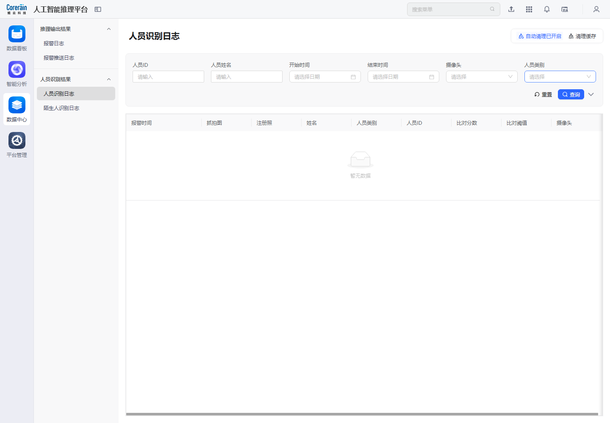 | 人员识别日志 11_请选择_悬停 | hover 悬停查看 请选择 的 hover/提示状态 | 悬停 请选择，观察按钮可点击性、危险操作样式、行操作显隐和 hover 反馈；这是判断操作优先级的重要细节。 |
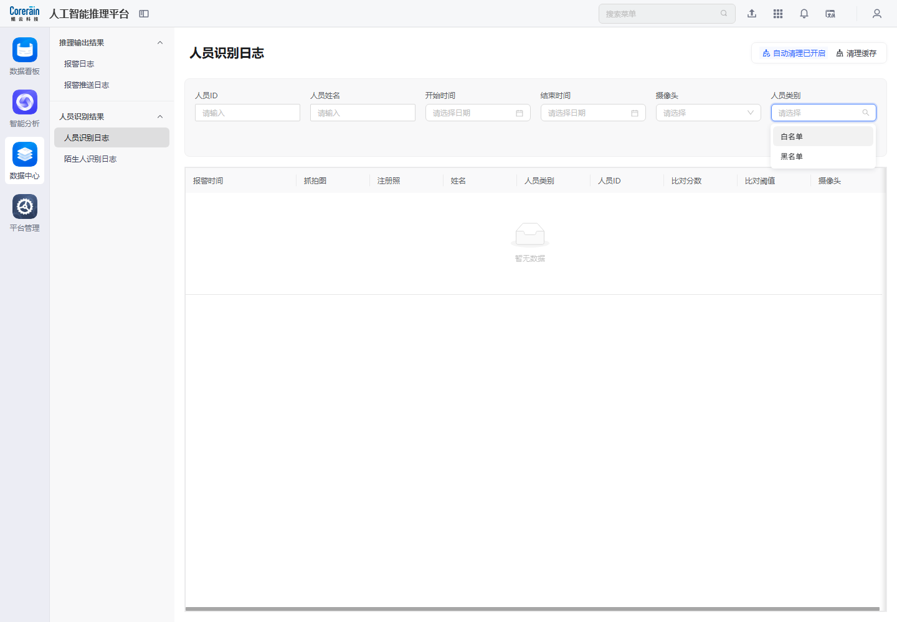 | 人员识别日志 11_请选择_点击后 | focus-or-open 点击后出现弹窗/下拉/提示：.custom-light-select-dropdown | 点击 请选择 后打开下拉选择。选项内容：whitelist blacklist 白名单 黑名单。适合枚举型筛选、菜单搜索和业务分类选择，建议支持搜索、高亮和最近使用。 |
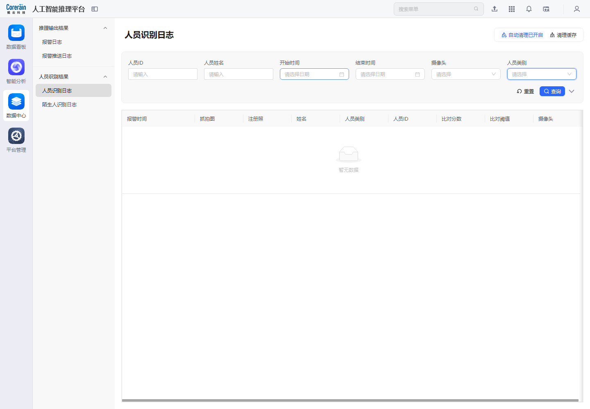 | 人员识别日志 12_请选择日期_悬停 | hover 悬停查看 请选择日期 的 hover/提示状态 | 悬停 请选择日期，观察按钮可点击性、危险操作样式、行操作显隐和 hover 反馈；这是判断操作优先级的重要细节。 |
| 人员识别日志 12_请选择日期_点击后 | focus-or-open 点击后出现弹窗/下拉/提示：.custom-light-picker-dropdown | 点击 请选择日期 后打开日期/时间选择器。日期控件把审计和日志类页面的时间范围筛选标准化，是追溯类功能的核心输入。 |
陌生人识别日志
- 定位：陌生人识别事件的审计页，面向安全值守和异常身份追踪。
- 核心对象：陌生人 ID、抓拍图、比对分数、阈值、摄像头、时间。
- 页面 URL：http://192.168.11.88:8081/app/main-app/data/stranger_identification_log/#/stranger_identification_log
- 主要控件：搜索菜单、请输入、请选择、请选择日期、Increase Value、Decrease Value、重置、查询
- 表格字段：报警时间、抓拍图、注册照、陌生人ID、比对分数、比对阈值、摄像头
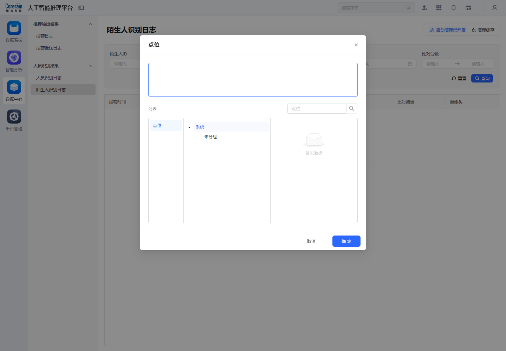
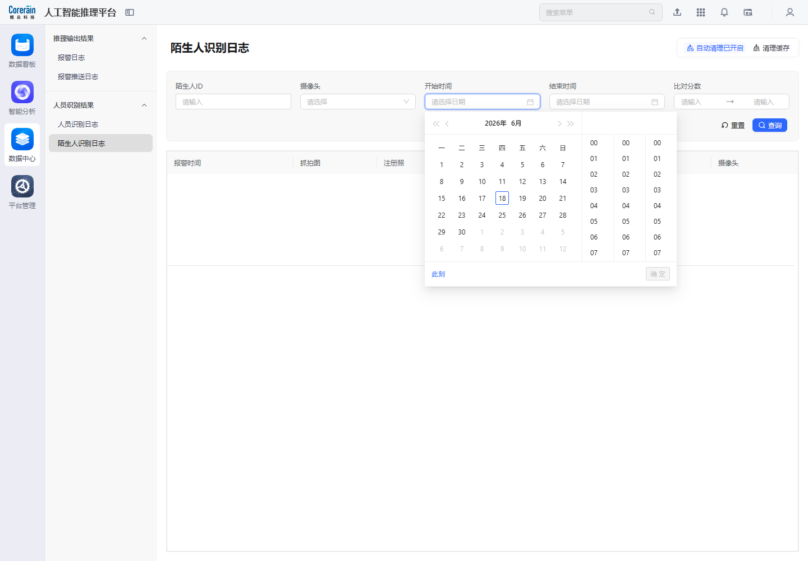
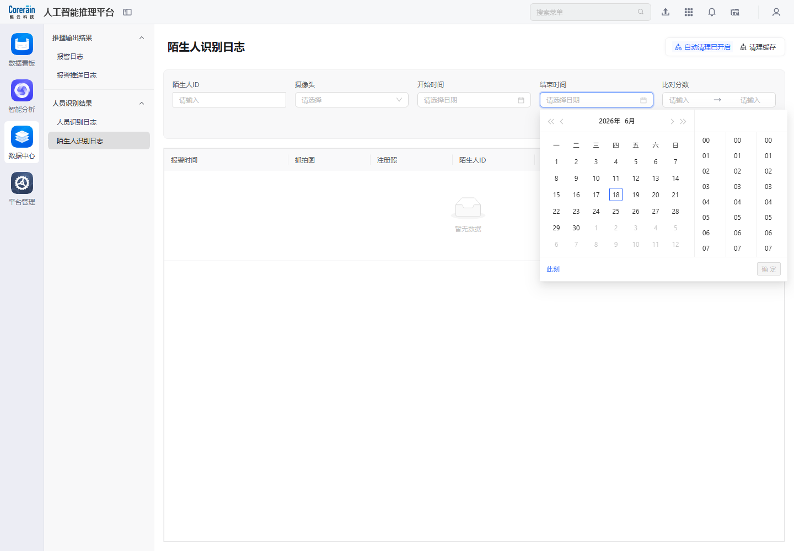
产品设计解读
- 相比人员识别日志，陌生人日志弱化注册身份，强化事件追踪与摄像头来源。
- 页面内容摘要：人工智能推理平台 搜索菜单 数据看板 智能分析 数据中心 平台管理 推理输出结果 报警日志 报警推送日志 人员识别结果 人员识别日志 陌生人识别日志 陌生人识别日志 自动清理已开启 清理缓存 陌生人ID 摄像头 开始时间 结束时间 比对分数 重置 查询 报警时间 抓拍图 注册照 陌生人ID 比对分数 比对阈值 摄像头 暂无数据
- 建议支持陌生人合并、转入人员库、事件聚类和高频出现提醒。
陌生人识别日志按钮、弹窗与状态截图明细
| 截图 | 子模块/动作 | 类型与页面反馈 | 产品设计说明 |
|---|---|---|---|
| 陌生人识别日志 页面全貌 | overview 进入子模块后的页面全貌，用于识别信息架构、主操作区、筛选区和表格/卡片区。 | 页面全貌用于判断信息架构：左侧导航负责定位，主区承载筛选、操作、表格或卡片，适合作为子模块设计基线。 | |
 | 陌生人识别日志 滚动位置_0% | scroll 记录页面不同滚动位置，补足表格、卡片和底部状态。 | 滚动截图用于确认页面内容密度、底部表格/分页/卡片布局，避免只看首屏导致遗漏。 |
| 陌生人识别日志 01_Increase Value_悬停 | hover 悬停查看 Increase Value 的 hover/提示状态 | 悬停 Increase Value，观察按钮可点击性、危险操作样式、行操作显隐和 hover 反馈；这是判断操作优先级的重要细节。 | |
| 陌生人识别日志 01_Increase Value_点击后 | click 点击后记录页面反馈或空数据提示 | 点击后记录页面反馈或空数据提示 | |
| 陌生人识别日志 02_Increase Value_悬停 | hover 悬停查看 Increase Value 的 hover/提示状态 | 悬停 Increase Value，观察按钮可点击性、危险操作样式、行操作显隐和 hover 反馈；这是判断操作优先级的重要细节。 | |
| 陌生人识别日志 02_Increase Value_点击后 | click 点击后记录页面反馈或空数据提示 | 点击后记录页面反馈或空数据提示 | |
| 陌生人识别日志 03_Decrease Value_悬停 | hover 悬停查看 Decrease Value 的 hover/提示状态 | 悬停 Decrease Value，观察按钮可点击性、危险操作样式、行操作显隐和 hover 反馈；这是判断操作优先级的重要细节。 | |
| 陌生人识别日志 03_Decrease Value_点击后 | click 点击后记录页面反馈或空数据提示 | 点击后记录页面反馈或空数据提示 | |
| 陌生人识别日志 04_Decrease Value_悬停 | hover 悬停查看 Decrease Value 的 hover/提示状态 | 悬停 Decrease Value，观察按钮可点击性、危险操作样式、行操作显隐和 hover 反馈；这是判断操作优先级的重要细节。 | |
| 陌生人识别日志 04_Decrease Value_点击后 | click 点击后记录页面反馈或空数据提示 | 点击后记录页面反馈或空数据提示 | |
| 陌生人识别日志 05_重置_悬停 | hover 悬停查看 重置 的 hover/提示状态 | 悬停 重置，观察按钮可点击性、危险操作样式、行操作显隐和 hover 反馈；这是判断操作优先级的重要细节。 | |
| 陌生人识别日志 05_重置_点击后 | click 点击后记录页面反馈或空数据提示 | 点击 重置 属于检索/刷新类动作，用于让用户明确控制筛选条件生效和数据更新。 | |
| 陌生人识别日志 06_查询_悬停 | hover 悬停查看 查询 的 hover/提示状态 | 悬停 查询，观察按钮可点击性、危险操作样式、行操作显隐和 hover 反馈；这是判断操作优先级的重要细节。 | |
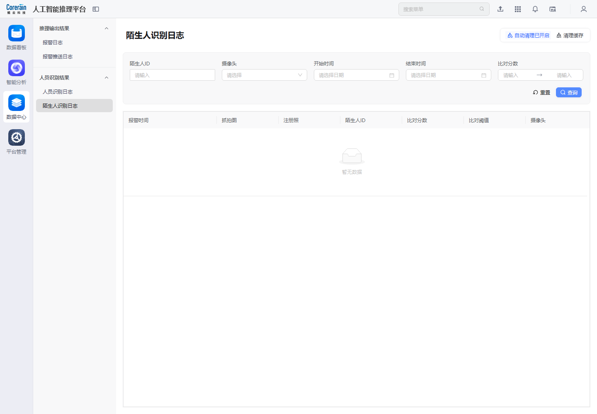 | 陌生人识别日志 06_查询_点击后 | click 点击后记录页面反馈或空数据提示 | 点击 查询 属于检索/刷新类动作，用于让用户明确控制筛选条件生效和数据更新。 |
| 陌生人识别日志 08_请选择_悬停 | hover 悬停查看 请选择 的 hover/提示状态 | 悬停 请选择，观察按钮可点击性、危险操作样式、行操作显隐和 hover 反馈；这是判断操作优先级的重要细节。 | |
| 陌生人识别日志 08_请选择_点击后 | focus-or-open 点击后出现弹窗/下拉/提示：.custom-light-modal、[role="dialog"] | 点击 请选择 后进入弹窗/抽屉式流程。弹窗内容：点位 列表 点位 系统 未分组 暂无数据 取消 确 定。设计上把复杂创建、导入、配置或密码类操作隔离在临时层，既保留当前列表上下文，也降低页面跳转成本。 | |
| 陌生人识别日志 09_请选择日期_悬停 | hover 悬停查看 请选择日期 的 hover/提示状态 | 悬停 请选择日期，观察按钮可点击性、危险操作样式、行操作显隐和 hover 反馈；这是判断操作优先级的重要细节。 | |
| 陌生人识别日志 09_请选择日期_点击后 | focus-or-open 点击后出现弹窗/下拉/提示：.custom-light-picker-dropdown | 点击 请选择日期 后打开日期/时间选择器。日期控件把审计和日志类页面的时间范围筛选标准化，是追溯类功能的核心输入。 | |
| 陌生人识别日志 10_请选择日期_悬停 | hover 悬停查看 请选择日期 的 hover/提示状态 | 悬停 请选择日期，观察按钮可点击性、危险操作样式、行操作显隐和 hover 反馈；这是判断操作优先级的重要细节。 | |
| 陌生人识别日志 10_请选择日期_点击后 | focus-or-open 点击后出现弹窗/下拉/提示：.custom-light-picker-dropdown | 点击 请选择日期 后打开日期/时间选择器。日期控件把审计和日志类页面的时间范围筛选标准化，是追溯类功能的核心输入。 | |
| 陌生人识别日志 11_请输入_悬停 | hover 悬停查看 请输入 的 hover/提示状态 | 悬停 请输入，观察按钮可点击性、危险操作样式、行操作显隐和 hover 反馈；这是判断操作优先级的重要细节。 | |
| 陌生人识别日志 11_请输入_点击后 | focus-or-open 点击后记录页面反馈或空数据提示 | 点击后记录页面反馈或空数据提示 | |
| 陌生人识别日志 12_请输入_悬停 | hover 悬停查看 请输入 的 hover/提示状态 | 悬停 请输入，观察按钮可点击性、危险操作样式、行操作显隐和 hover 反馈；这是判断操作优先级的重要细节。 | |
| 陌生人识别日志 12_请输入_点击后 | focus-or-open 点击后记录页面反馈或空数据提示 | 点击后记录页面反馈或空数据提示 |